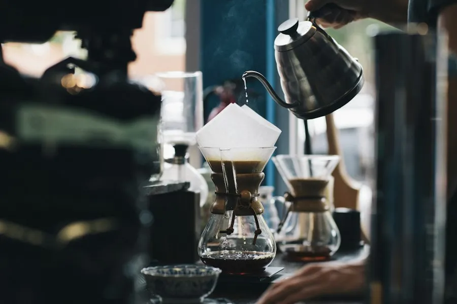
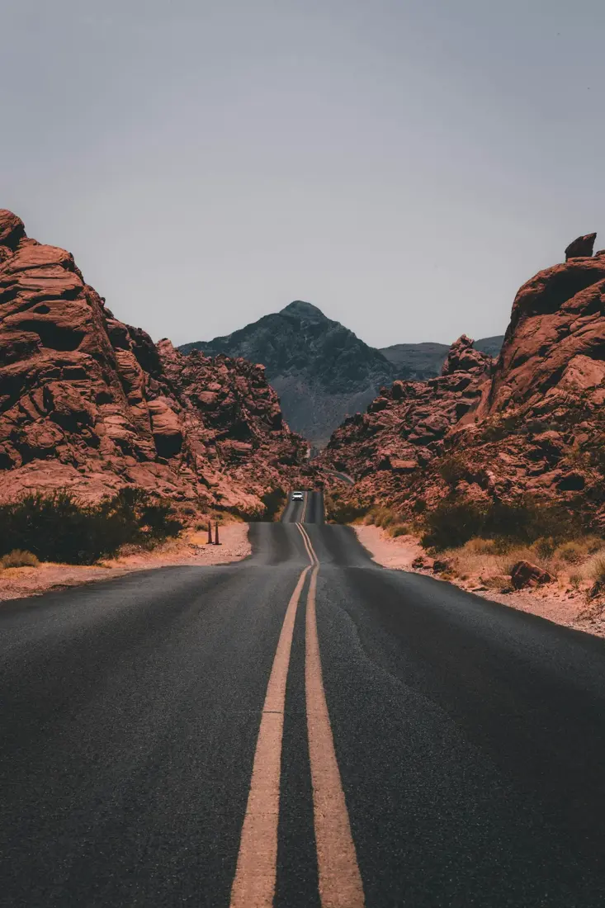
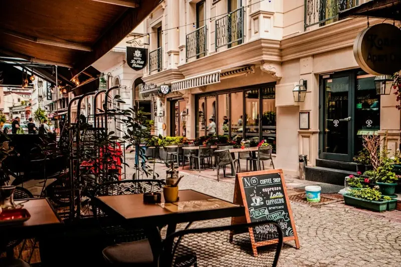
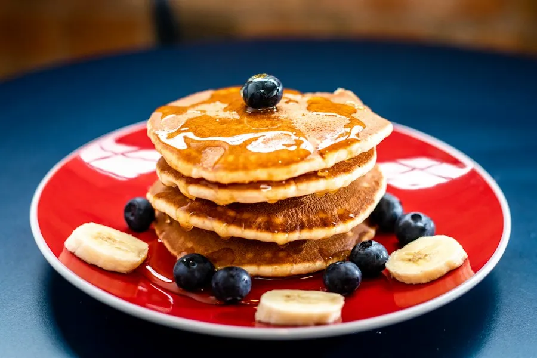

הסיפור
מיכל ואורי
אחרי עשר שנים בתל אביב חזרנו הביתה לגליל. מיכל במטבח, אורי על הקלייה — וב־2019 פתחנו את קפה כרם בבית אבן ישן בראש פינה. באים כמו אורחים, נשארים כמו משפחה.

☕
קולים פה
כל בוקר מחדש
🌾
מהשדות מסביב
חקלאים מהגליל ועמק החולה
⛰️
עם נוף לחרמון
שולחן בחוץ כשהאוויר טוב


